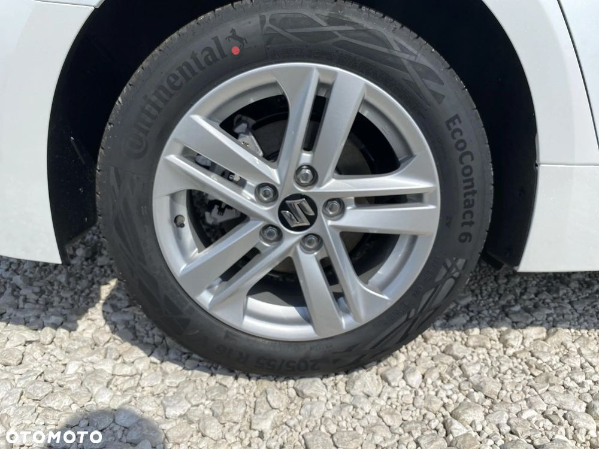

Oferta
Auto Complex
Autoryzowany Dealer SUZUKI
Łukanowice/Tarnów 227
32-830 Wojnicz
SAMOCHÓD FABRYCZNIE NOWY!
FAKTURA VAT !
WERSJA WYPOSAŻENIA ELEGANCE!
SPRAWDZONY SPRZĘT - GWARANCJA JAKOŚCI !
Wyposażenie:
Relingi dachowe (w kolorze srebrnym)
Spojler dachowy
Klapa bagażnika otwierana elektromagnetycznie
Tylne światło przeciwmgłowe
Szyby atermiczne
Przyciemniane szyby w tylnej części nadwozia
Elektrycznie regulowane, podgrzewane i składane lusterka zewnętrzne
Zderzaki, klamki, lusterka zewnętrzne w kolorze nadwozia
Kierunkowskazy w obudowach lusterek zewnętrznych
Wlew paliwa otwierany z wnętrza kabiny
Przednie światła przeciwmgłowe (LED)
Podgrzewane wycieraczki przedniej szyby
Kontrolka systemu BSM (Blind Spot Monitor) w lusterkach
Ogrzewanie tylnej szyby
Funkcja świateł "Follow me home"
Automatycznie ściemniające się lusterko wsteczne
Wykończenie deski rozdzielczej miękkimi materiałami
Elektryczne szyby przednie i tylne
Klimatyzacja automatyczna, 2-strefowa z funkcją S-FLOW
Nagrzewnica
Filtr przeciwpyłkowy
Kanał nawiewu powietrza na nogi pasażerów z tyłu
Antena DAB
Głośniki szerokopasmowe przednie i tylne
Głośniki wysokotonowe przednie
Tuner radiowy AM/FM/DAB
Łączność Bluetooth®
Kamera cofania
Przełącznik trybów jazdy
Ogranicznik prędkości
Podgrzewane fotele przednie (kierowcy i pasażera)
Oświetlenie kabiny
Osłony przeciwsłoneczne kierowcy i pasażera (z lusterkiem i podświetleniem)
Elektryczny hamulec postojowy
Gniazdo USB (w konsoli środkowej)
Gniazdo 12V (w kabinie oraz bagażniku)
Dzielona i składana tylna kanapa (60:40)
Tapicerka siedzeń tekstylna
Bagażnik z systemem podwójnej, płaskiej podłogi
Uchwyty na siatkę w bagażniku x4
Oświetlenie bagażnika
Uruchamianie silnika przyciskiem
Podłokietniki w drzwiach (wykończone skórą syntetyczną)
Podłokietnik w oparciu tylnej kanapy z uchwytami na 2 kubki (wykończony tapicerką materiałową)
Podłokietnik między przednimi fotelami ze schowkiem (wykończony skórą z ozdobnym przeszyciem)
Oświetlenie nastrojowe LED w kabinie
Czujniki parkowania (przednie i tylne)
Gniazdo USB-C (w podłokietniku)
Roleta bagażnika
System bezkluczykowego dostępu do samochodu
Stacja do bezprzewodowego ładowania telefonu komórkowego
Połączenie ze smartfonem (Apple CarPlay™, Android Auto™)
Regulacja pionowa i pozioma kolumny kierownicy
Centralny zamek ze zdalnym sterowaniem
Kierownica wykończona skórą (podgrzewana, z przyciskami sterowania radiem, zestawem głośnomówiącym i tempomatem)
System multimedialny z 10.5-calowym ekran dotykowym i funkcją nawigacji satelitarnej
Cyfrowy zestaw wskaźników (12.3-calowy ekran LCD)
Funkcja automatycznego włączania wycieraczek
Reflektory Bi-LED (światła mijania i drogowe)
Funkcja automatycznego włączania świateł
Ręczne poziomowanie reflektorów
ABS z funkcją EBD
VSC (Vehicle Stability Control - układ kontroli stabilności pojazdu)
PCS (Pre-Collision System - układ reagowania przedkolizyjnego)
AHB (Automatic High Beam - automatyczne światła drogowe)
RSA (Road Sign Assist - rozpoznawanie znaków drogowych)
DRCC (Dynamic Radar Cruise Control - tempomat adaptacyjny)
LTA (Lane Tracing Assist - przeciwdziałanie zjeżdżaniu z pasa ruchu)
HSA (Hill Starting Assist - wspomaganie ruszania na pochyłości)
TPWS (Tire Pressure Warning System - system monitorowania ciśnienia w oponach)
Czołowe poduszki powietrzne dla kierowcy i pasażera
Poduszka kolanowa kierowcy
System dezaktywacji poduszki czołowej pasażera
eCall (system ostrzegania awaryjnego)
Przednie 3-punktowe pasy bezpieczeństwa z napinaczami pirotechnicznymi i ogranicznikami siły napięcia oraz regulacją wysokości mocowania
Tylne 3-punktowe pasy bezpieczeństwa z napinaczami pirotech. i ogranicz. siły nap. (boczne x2), 3-punkt. pasy bezp. (środkowe)
System mocowania fotelika dziecięcego ISOFIX
Blokada zamka w drzwiach tylnych
Immobiliser
Światła do jazdy dziennej LED
Dodatkowe światło STOP
Emergency Brake Signal (system ostrzegania o awaryjnym hamowaniu)
LDA (Lane Departure Alert - ostrzeganie o zjeżdżaniu z pasa ruchu)
Steering Assist (automatyczne kontrowanie kierownicą)
Vehicle Sway Warning (ostrzeganie o niestabilności kierunku jazdy)
LC (Lane Centering - utrzymywanie pojazdu na środku pasa ruchu)
Kurtyny powietrzne dla pasażerów przednich i tylnych siedzeń
Boczne poduszki powietrzne SRS (przednie)
RCTA (Rear Cross Traffic Alert - ostrzeganie o ruchu poprzecznym z tyłu pojazdu)
BSM (Blind Spot Monitor - monitorowanie martwych pól widoczności)
SEA (Safe Exit Assist - ostrzeganie przed nadjeżdżającym pojazdem podczas wysiadania)
EDSS (Emergency Driving Stop System - zapobieganie niezamierzonej kontynuacji jazdy)
ISA (Intelligent Speed Assistance - inteligentny ogranicznik prędkości)
Powyższa oferta ma charakter informacyjny i nie stanowi oferty handlowej w rozumieniu art. 66 §1 kodeksu cywilnego oraz innych właściwych przepisów prawnych. Informacja zamieszczona ze względu na możliwość wystąpienia przypadkowych pomyłek oraz ewentualnej nieaktualności oferty.
